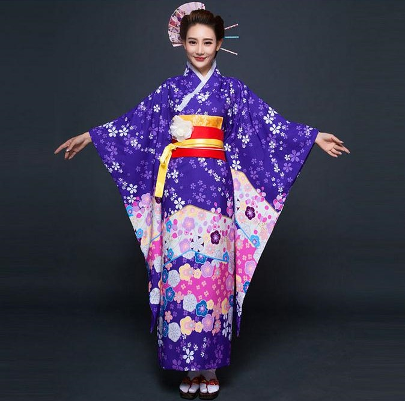

în timpul liber îmi place să mă joc Osu! care este bazat pe ritm de muzică şi Hearthstone care este un joc de cărţi.


Despre mine
Mă numesc Daraban Cristian. Vin din Republica Moldova, mai exact dintr-un sat numit Mîndrestii Noi cu o populaţie de aproximativ "" ce se află foarte aproape de Bălţi (al doilea cel mai mare oraş din ţară). Am făcut aici şcoala primară (clasele I-IV), după care am făcut gimnaziul (clasele V-IX) într-un sat apropiat Sîngereii Noi.
Am absolvit Liceul Republican "Ion Creangă" din Bălţi. Făceam naveta zilnic. Preţul din sat până în oraş şi invers era de 4.50 Mdl (aproximativ 1 Ron). Nu prea aveam prieteni in clasă din lipsa intereselor comune, dar acest lucru m-a ajutat să mă dezvolt.
în timpul liber îmi place să mă joc Osu! care este bazat pe ritm de muzică şi Hearthstone care este un joc de cărţi.
Lucruri Preferate
| Culoare | Sport | Mâncare | Genuri de filme/cărţi | Băutură |
| Negru | Darts | Paste | Psihologice | Limonadă |
O pasiune de a mea sunt trucurile cu cărţi.

O altă pasiune este cultura japoneză. Ce îmi place cel mai mult la Japonia sunt următoarele:
Lycoris radiata sau alfel spus crinul păianjenului roşu. Este o floare ce se găseşte pe teritoriul Japoniei dar şi în alte ţări. Simbolistic ea este asociată cu moartea, japonezii o mai numesc floarea morţii sau floarea iadului.
Sakura este un cireş. In cultura japoneză el simbolizează (de peste sute de ani) fragilitatea şi frumuseţea vieţii. Petalele florilor reamintesc că viaţa este frumoasă dar în acelaşi timp şi scurtă.
Kimono este o haină tradiţională în Japonia. Ea se îmbracă la difere festivale precum şi la nunţi. Simbolizează viaţă lungă şi noroc.
Muzica Japoneză. Ea constituie a doua cea mai mare piaţă de muzică din lume. Cântăreţele mele preferate sunt: Supercell, Egoist, Reol, Hanatan.